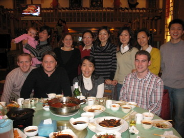

这个学期的教师英语班这周就要考试结课了。每周三个上午上课，课后还有繁重的作业，一个学期过去觉得十分漫长。但是回头想想，这真是我上过的最有意义最值得留恋的课了。
给我们上课的是4个外教：Perry,Brandon,Brooke 和Jenny. 课上得最好的是Brandon,教我们写作，据说他还是IELTS写作的考官。他用的是一本自编的教材，编的很不错，循序渐进的讲述英语作文的写法。我们在课堂上写了很多很有意思的作文：比如他会让你先写下一种动物的名字，然后假设你是这种动物，描写自己一天的生活；或者先让你写下你最喜欢的东西，然后假设这是你最恨的东西，描写恨的程度和理由；或者通过小动物的对话，描写一则寓言故事等等。Brandon每周都会布置作业，而且批改的十分认真。据他自己说，他还为大使馆工作，每个月都会坐好几次飞机，奔走于沈阳、武汉等地。我们的作业都是他在几千米的高空上批改的。他的批改极其细致，不仅有分数，针对每篇文章还都会有不短的批语，而且总是写得很有意思。一个学期下来，明显的觉得自己的写作水平的确是有长进的。Brandon有一个苗条美丽的中国妻子Lily，我们的教材上有一张她撅着嘴生气的照片，不过她本人比照片上漂亮很多。
Brooke是作业布置得最多的老师，说实话，我常常觉得她繁重的作业没有什么意义。不过，她是一个十分认真而且尽职的老师。在她的课上，我读了双城记和小妇人的英文减缩版，我都很爱看。Brooke性子很急，说话速度很快，她自己也承认是个很有控制欲的人。Brooke和她老公Scott都是学校的外教，还有一个8个月的女儿Sidney，长得就像一个小天使，可爱极了。学期结束的时候，Brooke又怀孕了。就是通过Brooke，我才了解原来中国还有让美国人觉得十分Nice的International医院，就是价格昂贵。
Jenny和Perry都是单身，但是两人性格截然不同。Perry是我见过的性格最内向的老外，教听力和文化，长得很帅（我总是觉得他长得象越狱中的Scotfield），但是说话、神情总是显得很羞涩。我们在他的课上看了不少的电影，主要是喜剧片，因为这是Perry的最爱。Jenny个子不高，是韩裔的美国人，长得和中国人没什么两样，但是性格十分外向，很爱说笑。在她的课上我们做了一些有意思的Presentation。
我们这个班开始就只有8个人，后来又有两个人中途退出，只有6个人支持到最后。这么小的一个班，大家很快就厮混的很熟。班里唯一的党代表Franklin就成了大家的开心果了。Franklin住在学校的集体宿舍，却每次都到得最晚，一般情况下都不交作业，学期快结束的时候更是十分过分的把所有的教材都弄丢了。但是他人缘不错，老师对他都比较宽容，不停的给他补交作业的机会，每次他没来的时候大家还都很想他。最后他要是能通过所有考试，估计他自己都得惊讶半天。
Hope和Joy开始的英文名叫Wang和Fang，上口语课时Jenny觉得她们俩名字太怪异，她们就从Jenny的名字列表中选了这两个。Hope的歌唱得有专业水准，Joy上课时表现得十分文静，骗过了大家，最后大家一起去K歌的时候才发现她是真正的麦霸。她们和Franklin都来自生命学院，平时总是一副唇齿相依的样子。但是我总觉得她们学院十分怪异，因为她们经常在12点下课的时候，匆匆忙忙的赶去学院开会。可能他们学院都是废寝忘食的疯子。几年后如果她们学院发展为学校的老大，我想我不会感到惊讶。
Linda是一个比较传统的人，有一个漂亮文静的6岁的女儿。Janna不知为什么，总让我有一种比较熟悉的感觉。我们有相同的爱好：Book and Travel.我们在给别人介绍学校旁边的饭店和卖衣服的小店时，发现常去光顾的店竟是一模一样。我觉得也许我们在很多地方是比较相像的，以前在不相交的空间里过着相似的生活。
课上得多了，大家渐渐熟了，上课变得越来越像几个朋友的聊天了，后来的课大家到得越来越齐，就算不得不缺课也有些舍不得的感觉。圣诞前一周，Brooke给大家策划了一个圣诞Party。外教每个人都带了一些自制的甜点，我们也带来了各自的家属，每个人准备了一份小小的礼物，大家像孩子一样玩交换礼物的游戏。之后又变成传统的击鼓传花的游戏，每个人都唱了一支歌。第二天上课的时候，Perry说：“I really appreciate your coming, Last night was so interesting”，我想，这也是每个人的感觉吧
相处久了，觉得老外和我们真是没什么不同，只是就像那些在国外工作的中国人一样，可能更能够适应而且欢迎环境的变化，不像我们总是局限于一成不变的生活。记得一次上课的时候，老师让我们描述一生中Unreasonable, crazy的一次经历。我把自己的一生回顾了一遍，却很不幸的想不起一件我所做过的Crazy的事情。从小就是一个好孩子的我，想到这里也难免有些遗憾。

上完最后一次课之后，我们邀请所有的外教去世纪金源的苗乡楼吃晚餐，大家一起排队领年糕，拥上去跳竹竿舞，之后又去K歌。那天我十一点才回家。LG说，你们的英语课真是上的轰轰烈烈呀。回想一下，在越来越平淡如水的生活里，LG这个词用得还真是恰当呀。